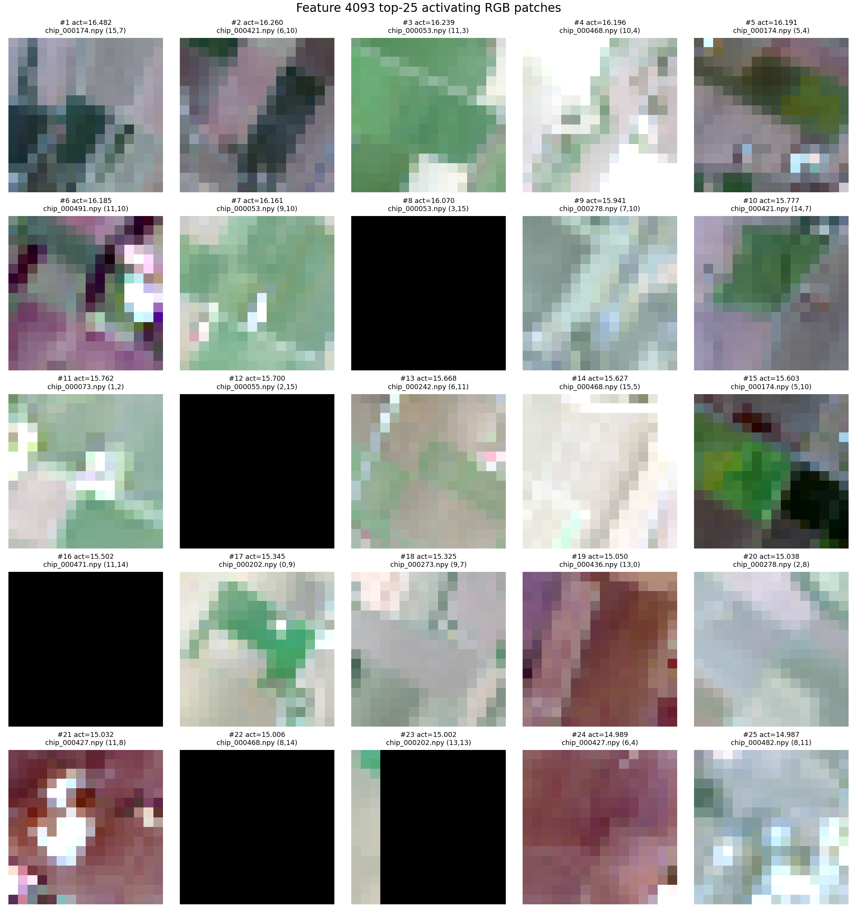

Early project note
Sparse Autoencoders for Geospatial Foundation Models: Early Experiments
Exploring whether sparse features can help inspect Prithvi-EO-2.0 representations.
This is an early project note, not a peer-reviewed result. The interpretations below should be read as candidate explanations rather than definitive semantic labels.
Motivation
Geospatial foundation models are becoming useful building blocks for Earth observation tasks such as land-cover mapping, environmental monitoring, disaster response, and infrastructure analysis. These systems can absorb large volumes of multi-spectral satellite data, but that also makes their internal representations difficult to inspect.
Interpretability matters in this setting because mistakes are rarely just abstract model errors. A model may latch onto cloud artifacts, seasonal patterns, sensor effects, geography-specific cues, or land-cover imbalance. For Earth observation, understanding what the model appears to represent can help us debug failure modes before they enter downstream workflows.
Experiment snapshot
encoder.blocks.6
[4, 6, 256, 256]
d_hidden=4096, k=64
My interest is in the intersection of mechanistic interpretability and geospatial AI. Sparse autoencoders have been useful for studying internal features in language models. I wanted to see whether a similar approach could give a practical inspection tool for geospatial foundation models.
Why SAEs for geospatial foundation models?
Sparse autoencoders try to represent dense model activations using a larger set of sparse features. If a feature activates on a coherent set of image patches, it becomes a candidate handle for interpretation.
This is not exactly the same problem as LLM interpretability. Satellite models operate over spatial patches, multiple spectral bands, sensor-specific artifacts, and geographic context. RGB images are only part of the story: NIR, SWIR, NDVI, NDWI, brightness, and texture can all matter. That makes qualitative inspection useful, but incomplete.
The goal here is modest: find candidate sparse features, inspect where they activate, compare them against simple remote-sensing statistics, and test whether ablating them changes the SAE-reconstructed representation more than a random active feature.
A standard ReLU+L1 SAE produced features that were too dense in early experiments. Switching to a Top-K SAE gave more controlled sparsity by forcing only a fixed number of latent features to be active for each patch token.
First observations
The most useful signal came from combining visual inspection with quantitative checks. Some features appeared visually coherent in top-activating patches, but RGB alone was not enough to support an interpretation. For several features, SWIR brightness, edge density, or texture statistics were more informative than the visible image.
I also found that ablation was a useful sanity check. Ablating selected SAE features changed reconstructed Prithvi representations more than ablating random active features. This does not show downstream task behavior changed. It only measures changes in SAE-reconstructed representation space.
The safer claim is that some SAE features are coherent candidates for interpretation, and some produce larger reconstruction-space changes than random active features when ablated.

Candidate feature example
I kept the visual evidence intentionally small here. The contact sheet below shows top-activating patches for one candidate feature. The pattern appears visually coherent, but it should still be treated as preliminary evidence rather than a semantic label.

Issues I ran into
Some early features captured no-data or black-patch artifacts rather than meaningful scene structure. Filtering invalid patches was important before trusting the contact sheets or feature summaries.
A standard ReLU+L1 SAE produced features that were too dense in early experiments, so I switched to a Top-K SAE to force a fixed number of active features per patch token.
The workflow that worked best was iterative: inspect top patches, check simple statistics such as NDVI, NDWI, brightness, and texture, then run a small ablation comparison against random active features. Each step reduced one source of over-interpretation.
Limitations
- This is one model: Prithvi-EO-2.0-300M.
- This is one layer:
encoder.blocks.6. - The dataset is small: 500 HLS chips.
- The feature interpretations are preliminary and should be treated as candidate labels.
- I have not yet run downstream task ablations.
- Stronger validation would require labels, geography-aware baselines, and review from domain experts.
Next steps
- Build more contact sheets and validate a larger set of sparse features.
- Use NDVI, NDWI, brightness, SWIR brightness, texture, and edge-density statistics more systematically.
- Run downstream task ablations instead of only reconstruction-space ablations.
- Compare features across layers to see whether earlier and later representations differ.
- Possibly compare against other geospatial foundation models such as Clay or TerraMind later.